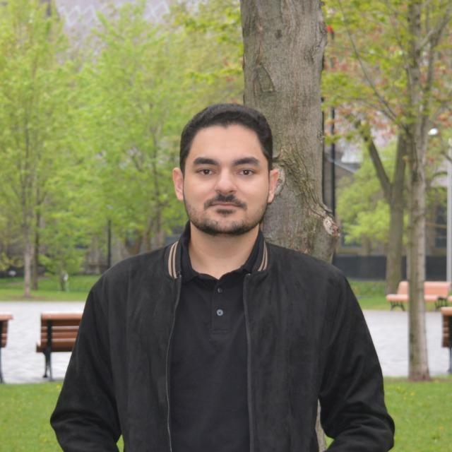
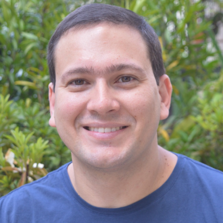

Organizing Committee
Bruno Cafeo
University of Campinas (IC-Unicamp)Juliana Pereira
Pontifical Catholic University of Rio de Janeiro (PUC-Rio)Steering Committee

Anderson Uchôa
Federal University of Ceará (UFC - Itapajé)Bruno Cafeo
University of Campinas (IC-Unicamp)Carla Bezerra
Federal University of Ceara (UFC- Quixadá)Juliana Pereira
Pontifica Catholic University of Rio de Janeiro (PUC-Rio)Larissa Rocha
State University of Bahia (UNEB)
